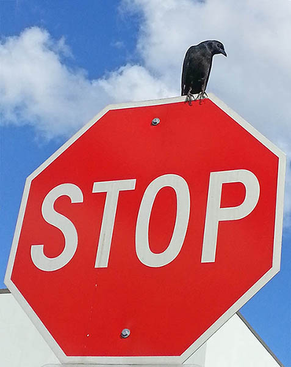

This document contains our first canvas example
This example will draw several styles of lines. First: basic line width
Line Caps
Line Joins
This example shows how to manage the canvas state using save() and restore()
This example will draw paths, both open and closed
This example will draw arcs, both open and closed
This example will draw bezier and quadratic curves, along with their control points so you can see how the curve is affected by the control point.
This example will render text on the canvas
All drawing operations can produce shadows. This example shows how to make shadows on a variety of canvas operations.
Patterns can be created from images, videos, or even other canvas elements.
The HTML5 Canvas supports two kinds of gradients - linear and radial.
Images can be drawn directly onto a canvas element in a variety of ways. Your code can drawn an image directly from an IMG or VIDEO element that is already in the page or loaded dynamically via script, or another canvas element can be used as a source image.
Clipping paths restrict drawing to a particular area of the canvas. Think of clipping paths as masks - areas where the mask is empty show through, while areas where the mask is opaque do not.
Any path can be a clipping path. You simply draw the path as normal and then call the context's clip() function to create one.
Clipping paths restrict drawing to a particular area of the canvas. Think of clipping paths as masks - areas where the mask is empty show through, while areas where the mask is opaque do not.
Any path can be a clipping path. You simply draw the path as normal and then call the context's clip() function to create one.
The translate transform simply repositions the origin of the canvas. In this demo, a rectangle is drawn at the default origin of 0,0. A second rectangle is drawn at 0,0 after the translate transform has been applied.
The scale transform causes drawing operations to be multiplied by the given scale multiples. Here, a rectangle is drawn, then a scale transform is applied, and the same rectangle is drawn again (but offset so the difference can be seen). Even though they are drawn with the same width and height, the scale transform causes the second rectangle to be drawn larger.
.
The canvas' globalAlpha setting allows you to set the opacity level of all objects drawn on the canvas at once. In This example, the globalAlpha is gradually reduced from 1.0 (the default) down to 0.1.
This demo shows how each of the compositing methods affects how drawing operations are made to the canvas.
Simple animation in Canvas using the setInterval tag